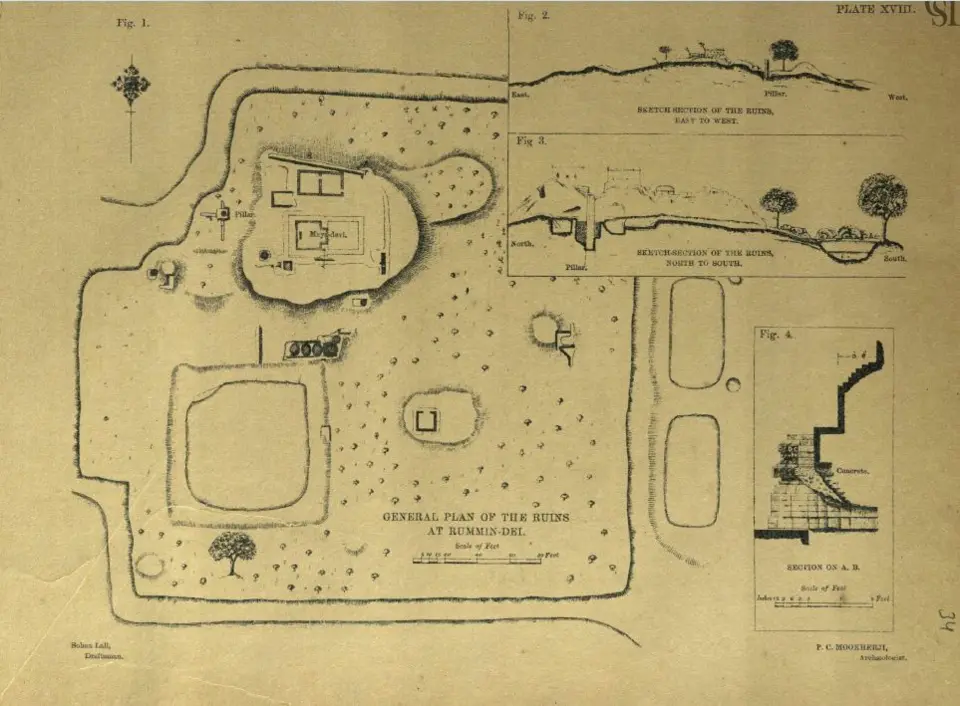
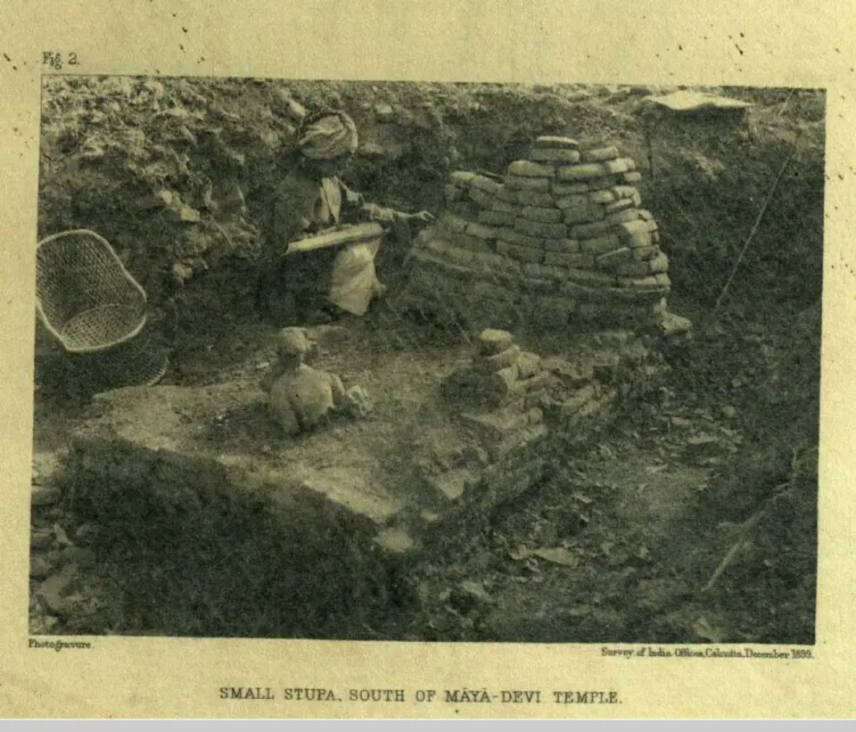
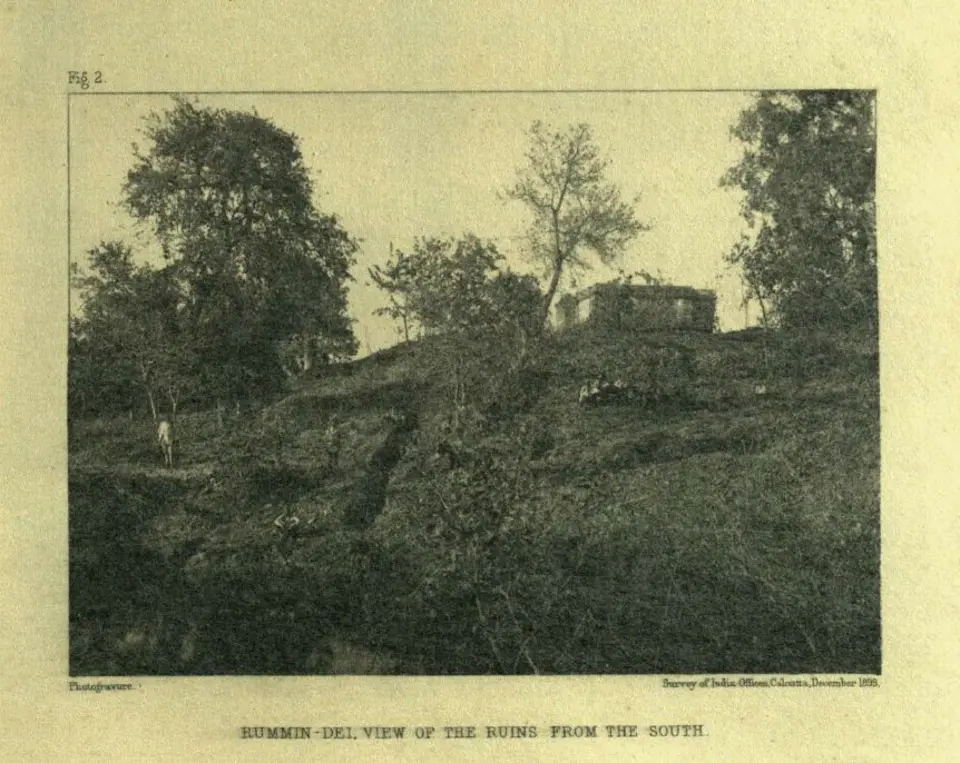
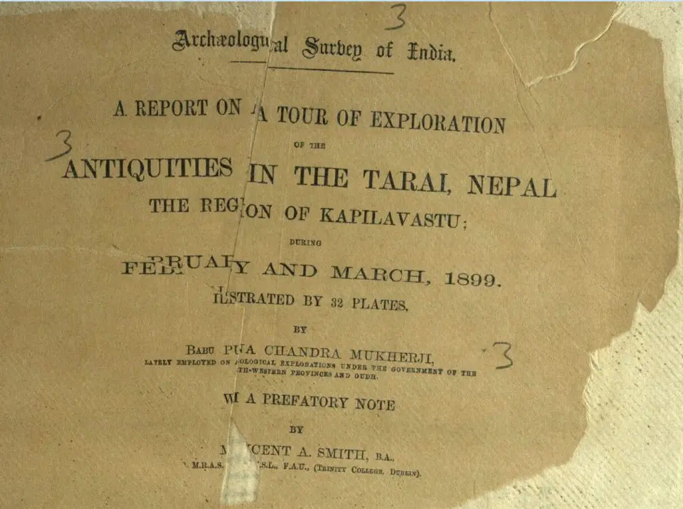
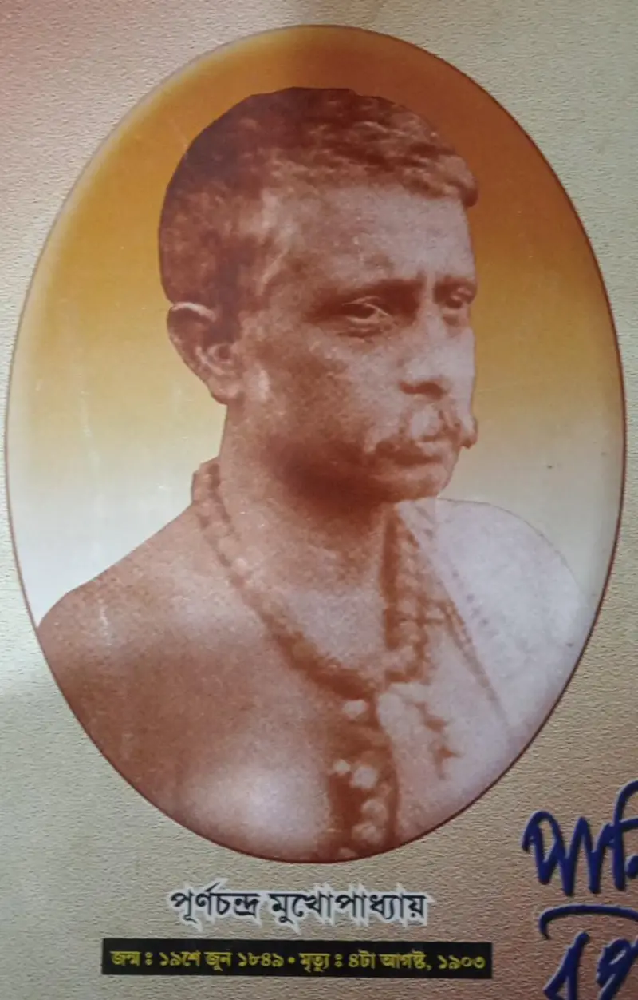

প্রত্নতত্ত্বের ইতিহাসে “আবিষ্কার” শব্দটি প্রায়ই একজন মানুষকে অতিরিক্ত কৃতিত্ব দেয়। পূর্ণচন্দ্র মুখার্জির কাজও তার ব্যতিক্রম নয়। তাঁর আগে স্থানীয় মানুষ, ভ্রমণকারী, নেপালি কর্মকর্তা ও অন্য গবেষকরা নানা নিদর্শন চিনেছিলেন। মুখার্জির বিশেষ অবদান ছিল সন্দেহজনক দাবি যাচাই করা, নির্দিষ্ট স্থানে খনন করা, মানচিত্র ও পরিকল্পনা তৈরি করা এবং প্রমাণগুলো একটি সরকারি প্রতিবেদনে সাজানো।
১. যাচাইয়ের দায়িত্ব নেপালের তরাইয়ে
১৯শ শতকের শেষে নেপাল-ভারত সীমান্তের তরাই অঞ্চলে বৌদ্ধ নিদর্শন নিয়ে নতুন আগ্রহ তৈরি হয়। ড. এলোইস ফুহরারের কিছু দাবি নিয়ে সন্দেহ দেখা দিলে ভিনসেন্ট আর্থার স্মিথের মতো কর্মকর্তারা আরও নির্ভরযোগ্য অনুসন্ধান চান। এই প্রেক্ষিতে মুখার্জিকে কপিলবস্তু-অঞ্চলের প্রত্ননিদর্শন পরীক্ষা এবং প্রয়োজনীয় স্থানে খননের কাজ দেওয়া হয়।
তাঁর ১৯০১ সালের বইয়ের শিরোনামপৃষ্টায় স্পষ্ট লেখা আছে—অভিযানটি হয়েছিল ফেব্রুয়ারি ও মার্চ, ১৮৯৯। বইটির পূর্ণ শিরোনাম A Report on a Tour of Exploration of the Antiquities in the Tarai, Nepal: The Region of Kapilavastu; ভূমিকা লিখেছিলেন ভিনসেন্ট এ. স্মিথ।১ অর্থাৎ পরবর্তী জনপ্রিয় লেখায় সাল নিয়ে ভিন্নতা দেখা গেলেও প্রাথমিক প্রতিবেদনের নিজের তারিখই এখানে ভিত্তি।
২. তিলোরাকোট: ধ্বংসাবশেষকে নগর-ইতিহাস হিসেবে পড়া
তিলোরাকোটে তিনি শুধু একটি টিলা খোঁজেননি; আশপাশের ঢিপি, প্রাচীর, মন্দির ও স্তূপের অবস্থান একে অন্যের সঙ্গে মিলিয়ে দেখেছিলেন। নগরের সীমানা ও ফটকগুলো মানচিত্রে বসানো এবং ফাহিয়েন ও হিউয়েন সাং-এর ভ্রমণবিবরণীর সঙ্গে তুলনা করার নির্দেশ ছিল। খনন থেকে পাওয়া কাঠামোগত প্রমাণ তাঁকে সাগরওয়ার বদলে তিলোরাকোটকে প্রাচীন কপিলবস্তুর অধিক সম্ভাব্য অবস্থান হিসেবে বিবেচনা করতে সাহায্য করে।
এখানে “সম্ভাব্য” শব্দটি গুরুত্বপূর্ণ। ঐতিহাসিক স্থান-শনাক্তকরণ একটি ছবি বা একটি লিখিত বর্ণনার ফল নয়; ভূগোল, শিলালিপি, স্তরবিন্যাস, স্থাপত্য ও পুরোনো পাঠ্যের সম্মিলিত যুক্তি। মুখার্জির প্রতিবেদন সেই যুক্তির একটি গুরুত্বপূর্ণ প্রারম্ভিক নথি। পরবর্তী গবেষণায় তিলোরাকোটের গুরুত্ব আরও নানাভাবে পরীক্ষা করা হয়েছে।

৩. রুম্মিনদেই থেকে লুম্বিনি: শিলালিপি, ধ্বংসাবশেষ ও পুরোনো পথ
রুম্মিনদেইর অশোকস্তম্ভের শিলালিপিতে বুদ্ধের জন্মের সঙ্গে লুম্বিনির সম্পর্ক স্পষ্ট। স্তম্ভটি আগে থেকেই পরিচিত ছিল এবং ১৮৯৬ সালে এর সনাক্তকরণের সঙ্গে খদগ সমশের ও ফুহরারের নাম জড়িত। তাই মুখার্জিকে “লুম্বিনির প্রথম আবিষ্কারক” বলা ঐতিহাসিকভাবে ঠিক হবে না। তাঁর কাজ ছিল সেই পরিচিত প্রমাণের আশপাশে আরও বিস্তারিত প্রত্নতাত্ত্বিক অনুসন্ধান।
১৮৯৯ সালের কাজে তিনি জঙ্গল পরিষ্কার করে ঢিপি পরীক্ষা করেন, খননক্ষেত্র তৈরি করেন এবং ইটের কাঠামো, ছোট স্তূপ ও অন্যান্য ধ্বংসাবশেষ নথিভুক্ত করেন। প্রধান কাঠামোটিকে মায়াদেবী মন্দিরের সঙ্গে যুক্ত করে তাঁর ব্যাখ্যা পরবর্তী গবেষণায় গুরুত্ব পায়। UNESCO-র The Sacred Garden of Lumbini প্রকাশনায়ও ১৮৯৯ সালের পরিকল্পনা, খননক্ষেত্র ও মায়াদেবী-সংক্রান্ত ব্যাখ্যায় মুখার্জির অবদান উল্লেখিত হয়েছে।৩
চীনা পরিব্রাজকদের বর্ণনায় উদ্যান, নদী, পুকুর, স্তম্ভ ও স্তূপের আপেক্ষিক অবস্থান পাওয়া যায়। এই পাঠ্যগুলো মাটির প্রমাণের সঙ্গে মিলিয়ে দেখা হয়েছিল। শিলালিপির ভাষা, স্থানীয় রুম্মিনদেই নাম এবং চারদিকের প্রত্ননিদর্শন—সব মিলিয়ে রুম্মিনদেইকে প্রাচীন লুম্বিনি হিসেবে বোঝার ভিত্তি শক্ত হয়।


৪. সীমিত সরঞ্জাম, বড় নথিপত্র
মুখার্জির নিজের বর্ণনায় জরিপ ও অঙ্কনের সরঞ্জামের অভাব এবং আলোকচিত্র-যন্ত্রের সমস্যার কথা আসে। নেপাল সরকারের দেওয়া দলে একজন ক্যাপ্টেন, খননকারী এবং স্থানীয় সহায়তা ছিল; পরের পর্যায়ে অঙ্কনে সহায়তার জন্যও সীমিত জনবল পেয়েছিলেন। এই সীমাবদ্ধতা জানলে ৩২ প্লেটসহ প্রতিবেদনটির কাজ বোঝা সহজ হয়—মানচিত্র, নকশা ও পর্যবেক্ষণ তখনকার প্রত্নতত্ত্বের মূল প্রমাণ-সামগ্রী ছিল।
সেই সঙ্গে কথা রাখা দরকার নেপালি খননকারী ও স্থানীয় মানুষের। প্রতিবেদনের নাম-প্রচ্ছদে একজনের নাম থাকলেও মাটি উন্মোচনের শ্রম অনেকের। উপনিবেশিক প্রশাসনের ভাষায় লেখা পুরোনো প্রতিবেদন পড়ার সময় সেই অদৃশ্য অবদানও মনে রাখা জরুরি।
৫. পাণিহাটির ছেলে থেকে প্রত্নতাত্ত্বিক
BBC Bangla-এর ২৫ সেপ্টেম্বর ২০২৩ জীবনী-প্রতিবেদনে স্থানীয় গবেষক কৃশানু ভট্টাচার্যের সংগ্রহের ভিত্তিতে মুখার্জির জন্ম ১৮৪৯ সালে পাণিহাটিতে বলা হয়েছে। ইতিহাস, ভূগোল ও মানচিত্রে আগ্রহ, লখনউ জাদুঘরে কাজ এবং মুম্বাইয়ের জে.জে. স্কুল অব আর্টে চিত্রাঙ্কনের প্রশিক্ষণ তাঁর প্রত্নতাত্ত্বিক কাজে বিশেষ যোগ্যতা তৈরি করেছিল।২
তরাইয়ের বাইরেও তিনি পাটলিপুত্র ও আশপাশের এলাকায় মৌর্য ও বৌদ্ধ নিদর্শন নিয়ে কাজ করেছিলেন। বিভিন্ন সময়ে জাদুঘরের দায়িত্বও সামলেছেন। ১৯০৩ সালের ৪ আগস্ট পাণিহাটির নিজের বাসায় মৃত্যুর খবরও একই জীবনী-প্রতিবেদনে পাওয়া যায়; তাঁর বাড়ির নাম ছিল “কপিলবস্তু ভবন”—যে অঞ্চলের সঙ্গে তাঁর গবেষণা-জীবন এত গভীরভাবে জড়িয়েছিল, তারই স্মৃতি।

৬. তাঁর অবদানকে কীভাবে মনে রাখব
মুখার্জির গুরুত্ব কেবল “কে আগে পৌঁছেছিল” প্রশ্নে সীমাবদ্ধ নয়। তাঁর প্রতিবেদন দেখায় কীভাবে একটি দাবিকে মানচিত্র, পাঠ্য, শিলালিপি ও খননের প্রমাণ দিয়ে পরীক্ষা করতে হয়। লুম্বিনি ও কপিলবস্তু আলাদা স্থান—এই মৌলিক পার্থক্য রেখে, পূর্ববর্তী ও পরবর্তী গবেষকদের অবদান স্বীকার করে এবং অনিশ্চয়তা লুকিয়ে না ফেলে তাঁর কাজ পড়লেই প্রকৃত ইতিহাস জানা যায়।
আজ মূল বইটি Internet Archive-এ পড়া যায়। পুরোনো OCR-এ ভুল থাকায় গুরুত্বপূর্ণ তারিখ বা নাম পৃষ্ঠার ছবির সঙ্গে মিলিয়ে নেওয়া উচিত। এই নিবন্ধেও জন্ম-মৃত্যু ও জীবনীর কিছু তথ্য সূত্র আলাদা করে চিহ্নিত করা হয়েছে; যেখানে প্রাথমিক প্রতিবেদন মূল ভিত্তি, সেখানেও তা স্পষ্ট।
সূত্র ও আরও পড়া
- পূর্ণচন্দ্র মুখার্জি, ১৯০১: A Report on a Tour of Exploration of the Antiquities in the Tarai, Nepal: The Region of Kapilavastu — ফেব্রুয়ারি–মার্চ ১৮৯৯; ভিনসেন্ট এ. স্মিথের ভূমিকা, ৩২ প্লেট।
- BBC News Bangla, ২৫ সেপ্টেম্বর ২০২৩: পূর্ণচন্দ্র মুখার্জির জীবনী ও তরাই অনুসন্ধানের প্রতিবেদন — জীবনী-তথ্য, স্থানীয় গবেষকের মন্তব্য এবং এই পাতায় ব্যবহৃত পাঁচটি ছবির উৎস-সন্ধান।
- UNESCO, ২০১৩: The Sacred Garden of Lumbini — ১৮৯৯ সালের খনন, পরিকল্পনা ও মায়াদেবী মন্দির-ব্যাখ্যার পরবর্তী গবেষণা-প্রেক্ষিত; CC BY-SA 3.0 IGO।
- UNESCO World Heritage Centre: Lumbini, the Birthplace of the Lord Buddha — বর্তমান বিশ্ব ঐতিহ্য-পরিচয় ও সংরক্ষণ-প্রসঙ্গ।
এই লেখাটি BBC-র অনুবাদ বা নকল নয়; মূল প্রতিবেদন ও অন্যান্য সূত্র মিলিয়ে স্বতন্ত্রভাবে লেখা। ছবিগুলোর পাশে প্রকাশিত ক্রেডিট রাখা হয়েছে; কোনো Getty Images ছবি ব্যবহার করা হয়নি।